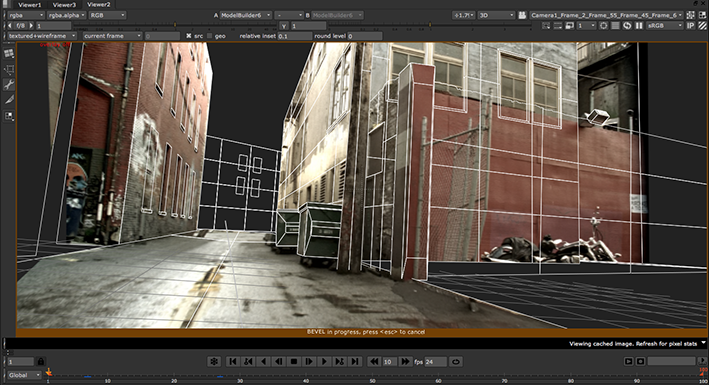

When editing ModelBuilder shapes, there are two types of editing actions:
• Single-step actions that happen instantly, such as extruding and merging faces.
• Multi-step actions (such as beveling and subdiving faces) that have extra parameters you can set. All multi-step actions behave in the same way:
• When you start the action, you can see a preview in the Viewer even though the action has not been applied yet. A colored border appears around the Viewer window to indicate that the action is in progress.

TIP: You can change the color of the border in the Preferences. Press Shift+S on the Node Graph to launch the Preferences dialog, go to the Appearance tab, and use the Highlight button to select a new color. Note that he brightness of the color is adjusted to prevent it from clashing with the Viewer background.
• The parameters for the action appear at the top of the Viewer. As you adjust them, the preview in the Viewer is updated.
• To cancel the action, you can press Esc on the Viewer.
• To accept the current parameter values and complete the action, you can press Return (or change the selection mode, start a new action, press the +, -, or duplicate buttons, add a new shape, change into Align mode, or close the ModelBuilder properties).
To edit your shapes:
| 1. | You can edit vertices, edges, faces, and entire objects. For more information, see: |
• Editing Edges and Edge Loops
• Editing Faces, and
| 2. | When you’re happy with your edits, proceed to Exporting Shapes to Separate Geometry Nodes. |
|
|